Los medios como actor
- El rol de los medios de comunicación en la democracia
- Evidencia empírica
- ¿Quo vadis?
Hechos estilizados
- Medios de comunicación largamente concebidos y analizados como “el cuarto poder” –actor fundamental en la democracia
- Medios juegan un rol fundamental porque transmiten masivamente información sobre varias cosas relacionadas con gobierno/políticos
- Medios pueden ser una forma de reducir asimetrías de información entre políticos y ciudadanos y así reducir las rentas políticas
- Pero…
- Medios tienen incentivos a no ser neutrales e imparciales
Modelo básico: Intuición
- El modelo básico más importante de medios y políticas es el de Strömberg (2001). Ideas:
- Si más votantes informados reciben políticas favorables (que les aumenta utilidad), entonces los medios masivos deberían influir sobre la politica porque son la principal fuente de información que la gente usa cuando vota
- Mayoría de modelos de competencia electoral incluyen votantes informados y no informados
- Modelizar medios es esencialmente endogeneizar quien es informado y quien no
Modelo básico: Grupos
- Una sociedad con \(n\) personas y dos grupos de ciudadanos:
- \(s\) es un grupo de presión (lobby) y se beneficia de un programa pagado por
- \(t\) que es la mayoría de la población
- Utilidad de individuos en \(s\) y \(t\) es: \[\begin{align}
u_{s}(s,t)=ln(s) \\
u_{t}(s,t)=1-t
\end{align}\]
- donde \(t\) es el grupo y el impuesto que enfrenta la mayoría de la población y \(s\) es la transferencia/beneficio del programa que percibe cada individuo de \(s\)
Modelo básico: Gobierno y partidos
- En cada grupo continuo \(n_{j}\) de electores \(j \in {s,t}\). La RP del gobierno es: \[\begin{align}
n_{s}s+r=n_{t}t
\end{align}\]
- donde \(r\) son las rentas políticas endógenas que captura el gobernante
- Dos partidos \(A\) y \(B\) que anuncian propuestas sobre nivel de \(t\) y \(s\) (y por ende, \(r\))
- Partidos derivan utilidad de \(r\) y también de rentas de ego (exógenas) dadas por \(R\)
Modelo básico: Prensa
- Hay un monopolio: un periódico que transmite información sobre \(s\) y \(t\). Su producto es destinar espacio: \(q_{s}\) a transferencias y \(q_{t}\) a impuestos
- Individuos pueden aumentar su utilidad en 1 al conocer la plataforma de los partidos sobre \(s (t)\)
- Probabilidad de que un lector vea un artíuclo es: \[\begin{align}
\rho(q_{j})=min(\sqrt{q_{j}},1)
\end{align}\]
- El lector compra el periódico siempre que: \[\begin{align}
\rho(q_{j})+\gamma_{i} \geq p
\end{align}\]
- donde \(p\) es el precio del periódico y \(\gamma_{i}\) mide otros aspectos del periódico que dan utilidad al lector
Modelo básico: Prensa (cont.)
- Precio \(p\) dado de modo que \((p-\gamma_{i})\) se distribuye uniformemente sobre \([0,1]\)
- En cada grupo, compran el periódico todos quienen \(\rho(q_{j}) > p-\gamma_{i}\), o una fracción \(\alpha(q_{j})\) dada por: \[\begin{align}
\alpha(q_{j})=\int_{0}^\rho(q_{j})f(p-\gamma_{i})di=\rho(q_{j})
\end{align}\]
- Fn densidad de probabilidad \((p-\gamma_{i})=1\)
- Demanda total es entonces: \[\begin{align}
\alpha(q_{t})n_{t}+\alpha(q_{s})n_{s}
\end{align}\]
Modelo básico: Prensa, costo
- Costos de producción del diario: \[\begin{align}
C(.)=\frac{1}{2}c(q_{s}+q_{t})+(\alpha(q_{t})n_{t}d_{t}+\alpha(q_{s})n_{s}d_{s})
\end{align}\]
- primer término son costos de producir noticias (investigar, editar, escribir); segundo término son costos de reproducción y distribución a cada grupo \(d_{j}\) es el costo promedio de reroducción/distribución para \(j\)
- Rendimientos crecientes a escala
Modelo básico: Prensa, costo
- Si \(p_{j}=p-d_{j}\) es el precio por unidad vendida a cada grupo neto de costos, entonces los beneficios son \[\begin{align}
p_{t}\alpha(q_{t})n_{t}+p_{s}\alpha(q_{s})n_{s}-\frac{1}{2}c(q_{s}+q_{t})
\end{align}\]
- Dado que \(\alpha(q_{j})=\rho(q_{j})=min(\sqrt{q_j},1)\), el mix de noticias que maximiza beneficios es \[\begin{align}
\frac{1}{2}p_{j}(q_{j})^{-\frac{1}{2}}n_{j}=\frac{1}{2}c
\end{align}\]
- y despejando queda: \[\begin{align}
q_{j}=(\frac{p_{j}n_{j}}{c})^{2}
\end{align}\]
Modelo básico: Prensa, equilibrio
- Como \(\alpha(q_{j})\) compran diario y \(\rho(q_{j})\) ven noticia, la proporción de votantes informados es: \[\begin{align}
\sigma_{j}=\alpha(q_{j})\rho(q_{j})=(\frac{p_{j}n_{j}}{c})^{2}
\end{align}\]
- Suponemos \(p_{j}n_{j}<c\) para que \(\sigma_{j} < 1\)
- Hay mayor proporción de personas informadas en grupos más grandes y en los que es más barato distribuir las noticias
Competencia electoral
- Procede como antes a través de modelo de votación probabilística. Individuos toman en cuenta: 1) utilidad indirecta, 2) shock individual (\(\beta_{i}\)) y shock agregado de popularidad (\(\eta\)) –a favor del partido B
- \(\beta_{i}\) y \(\eta\) distr. uniforme con dens. unitaria y centrada en 0
- En grupo \(j\) la decisión de voto para el porcentaje \(\sigma_{j}\) de votantes informados es apoyar a \(A\) si: \[\begin{align}
u_{j}(s_{A},t_{A})-u_{j}(s_{B},t_{B})=\Delta u_{j} \geq \beta_{i}+\eta
\end{align}\]
- Votantes no informados tienen en cuenta expectativas (NOTA: no están informados y sólo tienen una idea vaga) y apoyan a \(A\) si: \[\begin{align}
E[u_{j}(s_{A},t_{A})-u_{j}(s_{B},t_{B})]=\Delta \bar{u_{j}} \geq \beta_{i}+\eta
\end{align}\]
Competencia electoral (cont.)
- A gana con probabilidad: \[\begin{align}
P_{A}=Pr[\frac{1}{2}+\sum_{j}(\sigma_{j}(\Delta u_{j}-\eta)+(1-\sigma_{j})(\Delta \bar{u_{j}}-\eta))\frac{n_{j}}{n} > \frac{1}{2}]
\end{align}\]
- Note que la formula anterior es abreviada de: \[\begin{align}
P_{A}=\frac{1}{2}+\frac{n_{s}}{n}(\sigma_{s}\Delta u_{s}+(1-\sigma_{s})\Delta \bar{u_{s}})+\frac{n_{t}}{n}(\sigma_{t}\Delta u_{t}+(1-\sigma_{t})\Delta \bar{u_{t}})
\end{align}\]
Competencia electoral (cont.)
- \(P_{B}=1-P_{A}\). Los partidos buscan maximizar \(P_{J}(R+r)\) –valor esperado de rentas y valor exógendo de estar a cargo.
- Usando la distribución de \(\eta\): \[\begin{align}
P_{A}=\frac{1}{2}+\sum_{j}\frac{n_{j}}{n}(\sigma_{j}(\Delta u_{j})+(1-\sigma_{j})(\Delta \bar{u_{j}}))
\end{align}\]
- Para \(A\) es: \[\begin{align}
[\frac{1}{2}+\frac{n_{s}}{n}(\sigma_{s}(ln s_{A}-ln s_{B})+(1-\sigma_{s})\Delta \bar{u_{s}})+\frac{n_{t}}{n}(\sigma_{t}(t_{B}-t_{A})+(1-\sigma_{t})\Delta \bar{u_{t}})](R+(n_{t}t_{A}+n_{s}s_{A}))
\end{align}\]
Competencia electoral (cont.)
- Se derivan las CPO y luego de simplificar queda gasto: \[\begin{align}
s=\frac{\sigma_{s}}{\sigma_{t}}=[\frac{(p-d_{s})n_{s}}{(p-d_{t})n_{t}}]^{2}
\end{align}\]
- Las rentas endógenas son: \[\begin{align}
r=\frac{n}{2\sigma_{t}}-R
\end{align}\]
- Y los impuestos son: \[\begin{align}
t=\frac{n}{2 n_{t}\sigma_{t}}+\frac{n_{s}\sigma_{s}}{n_{t}\sigma_{t}}-\frac{R}{n_{t}}
\end{align}\]
Competencia electoral (cont.)
- Un planificador social benevolente, tendríamos:
- \(s=1\)
- \(r=0\)
- \(t=\frac{n_{s}}{n_{t}}\)
- Medios y redistribución
- El gasto de equilibrio en el programa \(s\) es creciente en el número de gente informada que se beneficia del programa, \(\sigma_{s}\), relativo a la fracción de contribuyentes, \(\sigma_{t}\).
- Implicancia \(\longrightarrow\) redistribución es mayor para programas de gasto que son intensivamente cubiertos por los medios
- Programas de gasto que afectan a grandes grupos
- Grupos para los que producir noticias es barato
Competencia electoral (cont.)
- Medios y rentas políticas
- Mientras más informados los contribuyentes, menores rentas para el político
- Intuicion \(\longrightarrow\) el costo (en términos de votos) de seguir políticas ineficientes es mayor mientras más votantes informados haya
- Medios e impuestos
- Provisión de noticias debería bajar impuestos –mas rentable para medios cubrir posiciones sobre impuestos que sobre programas (ciudadanos más informados sobre impuestos que sobre programas
- Pero uso mayor de medios de parte de individuos de menores ingresos, mayores impuestos (por mayor información de programas favorables a ellos)
Medios con lobbying
- Cuando hay lobby, el grupo \(s\) se organiza (i.e como un lobby). Partidos reciben dinero del lobby y campaña incide sólo sobre votantes no informados
- Lobbies eligen contribuciones \(C_{A}\) y \(C_{B}\) para maximizar beneficios y los partidos eligen políticas para maximizar probabilidad de reelección
- Nivel de rentas \(r\) identico al caso sin lobby; pero la transferencia \(s\) es mayor –por el poder de influencia sobre el gobierno. Por ende, \(t\) son mayores
Medios con lobbying (cont.)
- Medios dan mas importancia a grupos más grandes (IRS en la producción de noticias)
- Presencia de medios incrementa \(\sigma_{t}\) en comparación con \(\sigma_{s}\) reduciendo influencia de lobby a través de campañas
- Presencia de medios reduce porcentaje de votantes no informados, \((1-\sigma)\), reduciendo influencia de lobby
- Pero…
- pueden incrementar \(h\) –efectividad para aumentar popularidad. Esto juega a favor de lobby
- ¿Qué sucede cuando medios tienen sesgos sistemáticos en noticias?
Evidencia empírica
- Stromberg (2004) estudia si votantes mejor informados tiene mas capacidad de capturar atención de políticos
- Usa un buen caso \(\longrightarrow\) mayor difusión de uso de radio en crisis de 1930 con implementación de FERA como parte del New Deal
- Variación en la penetración de radio entre condados (shock exógeno) –permite identificar efecto del medio masivo sobre el gasto público (FERA)
- Principal resultado \(\longrightarrow\) gobernadores dirigieron más fondos (pc) a áreas donde una mayor proporción de población tenía radio
Evidencia empírica (cont.)
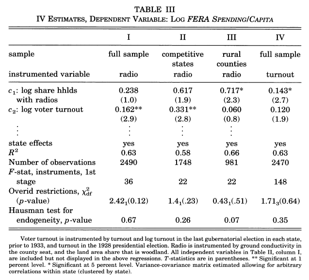Impacto de expansión de radio en gasto público
Evidencia empírica (cont.)
- Besley and Burgess (2022) estudian influencia de medios masivos sobre respuesta del gobierno a necesidades o demandas de votantes
- Datos de India entre 1958 y 1992
- Problema: ¿mayor circulación de diarios aumenta (mejora) respuesta del gobierno ante shocks naturales (sequías, inundaciones)
- La respuesta es si \(\longrightarrow\) el efecto además es mayor cuando los periódicos son escritos en lengua local
Evidencia empírica (cont.)
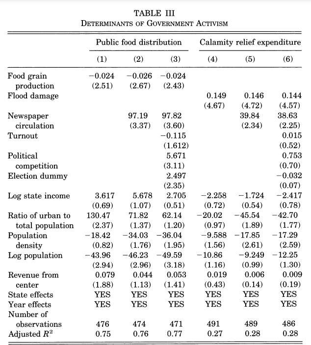Circulación de diarios y respuesta de gobierno
Evidencia empírica (cont.)
- Ferraz and Finan (2008 hacen un paper muy citado –rol de medios para reducir el problema de agencia (información asimétrica)
- Brasil organizó e implementó un sistema nacional de auditorías aleatorias a los municipios en el año 2003. Focalizado en el uso de transferencias federales
- Los resultados son públicos y se difunden por medios masivos
- Información publicado tiene impacto negativo sobre desempeño electoral de políticos corruptos expuestos
- Resultado más pronunciado aún en municipios con radios locales
Evidencia empírica (cont.)
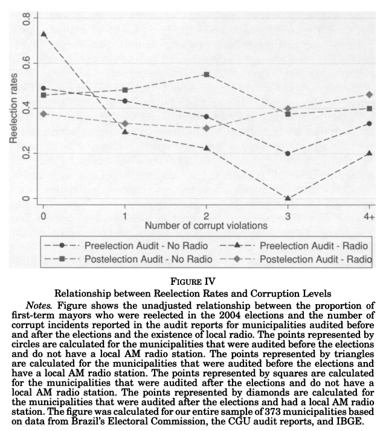Auditorías públicas y resultados electorales
Evidencia empírica (cont.)
- Alternativamente Eisensee and Strombërg (2007) muestran y documentan que los medios tienen capacidad para desviar la atención
- Analizan influencia de medios masivos sobre respuesta de gobierno de EEUU a desastres naturales en el exterior
- Usan un índice de presión de noticias “IPN” (mas alto, mas noticias por reportar).
- Un mismo desastre no recibe misma atención bajo IPN alto o bajo
- Ejemplo: afectados menos probabilidad de recibir ayuda cuando hay otro evento masivo (JJOO)
- Sesgos de medios en el reporte de catástrofes (Asia/Africa menos cobertura vis-a-vis occidente)
Evidencia empírica (cont.)
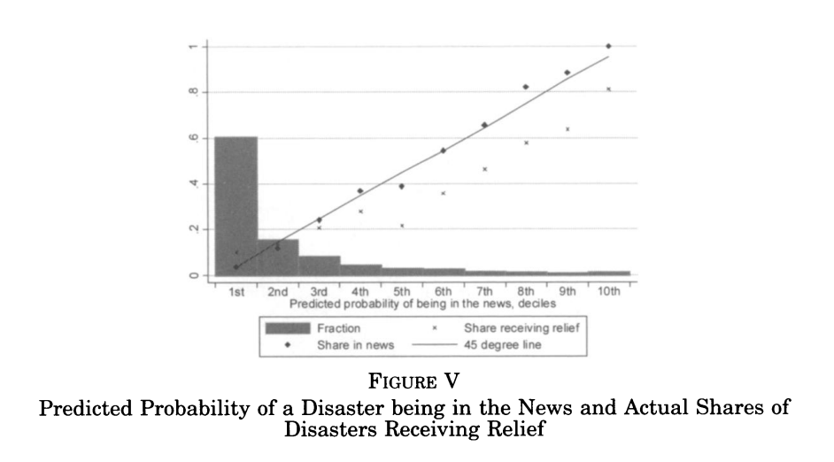Desastres naturales, noticias y ayuda
Evidencia empírica (cont.)
- Finalmente, Snyder and Strombërg (2010) muestran que cuando medios dan más información sobre política local se mejora rendición de cuentas
- Construyen indice de congruencia entre area de circulación de noticias y distrito electoral –idea: si mayoría de lectores de un medio proviene de mismo distrito, altos incentivos a cubrir política local con mas detalle
- Votantes en áreas con mayor congruencia más expuestos a información detalladas sobre su representate
Evidencia empírica (cont.)
- Principales resultados:
- Votantes en areas con alta congruencia mejor informados
- Menor congruencia, menos participación en comités locales
- Distritos con mayor congruencia reciben más fondos federals PC
- Cobertura mediática tiene efecto tangible sobre calidad de políticas
Evidencia empírica (cont.)
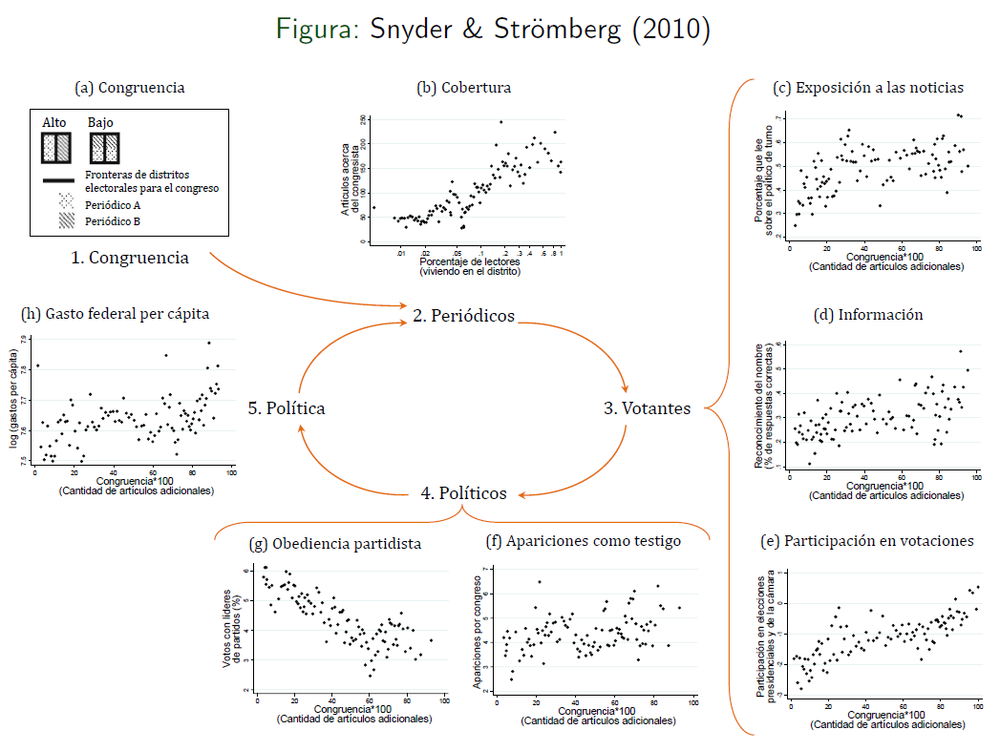Congruencia entre areas de noticias y electorales
Medios modernos: redes sociales
- Intuición teórica de que medios modernos y redes sociales tienen algún tipo de impacto sobre resultados económicos y políticos
- Why the Past 10 Years of American Life Have Been Uniquely Stupid? [Jonathan Haidt, The Atlantic, 2022]
- Pero la polarización política y la enemistad faccional precede el advenimiento de las redes sociales
- ¿Qué es diferente, qué es lo característico? \(\longrightarrow\) herramientas de viralidad (likes, retweets, share)
Medios modernos: redes sociales (cont.)
- Una de las principales preocupaciones \(\longrightarrow\) uso masivo de redes sociales ha hecho a las personas y sociedad particularmente vulnerables al **sesgo de confirmación*
- El sesgo de confirmación refiere a cómo tendemos a preferir información y/o noticias que confirman lo que pensamos de antemano ante que desafiarla
- Tres canales
- Sesgo de investigación \(\longrightarrow\) cherrypickear evidencia científica o anecdótica
- Sesgo de interpretación \(\longrightarrow\) pensar las acciones del otro como extremadamente negativas (si no coinciden con lo que pienso)
- Sesgo de memoria \(\longrightarrow\) cuando no te gusta (como piensa) alguien, probablemente ponderas menos en la memoria cuando fueron (hicieron cosas) buenas
Medios modernos: redes sociales (cont.)
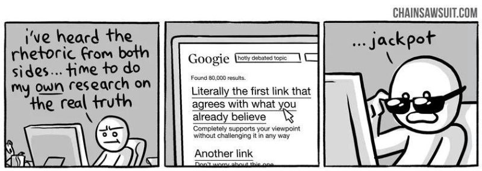Vamo’ a informarno’
¿Ideología o afecto?
- Iyengar et al (2012) retoman debate sobre polarización
- definición vinculada con el concepto de distancia social
- Tradicionalmente polarización política focaliza exclusivamente en preferencias de política
- división entre partidos alrededor de temáticas (issues)
- Idea novedosa \(\longrightarrow\) polarización como el grado en que los partidarios se ven a si mismos como opositores rechazados (exogrupos rechazados)
Identidad social
Identidad social requiere no sólo sentimiento positivo para con los del mismo grupo sino que también sentimiento negativo hacia los que se identifican con los del otro grupo - Incluso esto se visualiza en las respuestas a cómo se sentiría una persona de un grupo si su hijo/a se casara con alguien de una afiliación partidaria similar o dismilar - la cuestión racial y religiosa son formas más débiles de identidad social que la afiliación partidaria!
Identidad social (cont.)
Suppose a son or daughter of yours was getting married. how would you feel if he or she married a supporter of the republican/democratic (conservative/labor) Party? Would you be pleased, would you be displeased, or would it make no difference? [Almond and Verba (1960)]
- Pregunta similar: > How would you feel if you had a son or daughter who married a > republican/democrat (conservative/labor) supporter? not at all > upset, somewhat upset, very upset?” [2008 YouGov Poll]
Puntajes de termómetros
- El termómetro de sentimientos desarrollado a partir de ANES donde los encuestados responden sobre sus sentimientos respecto de una persona, grupo o tema en una escala de 0 (frío) a 100 (caliente), mientras que 50 (neutral)
Actitudes y emociones respecto del otro grupo
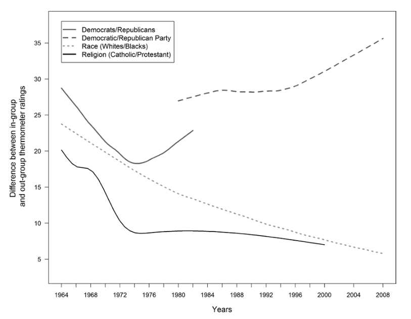No te cases con la hija del republicano…
Actitudes y emociones respecto del otro grupo (cont.)
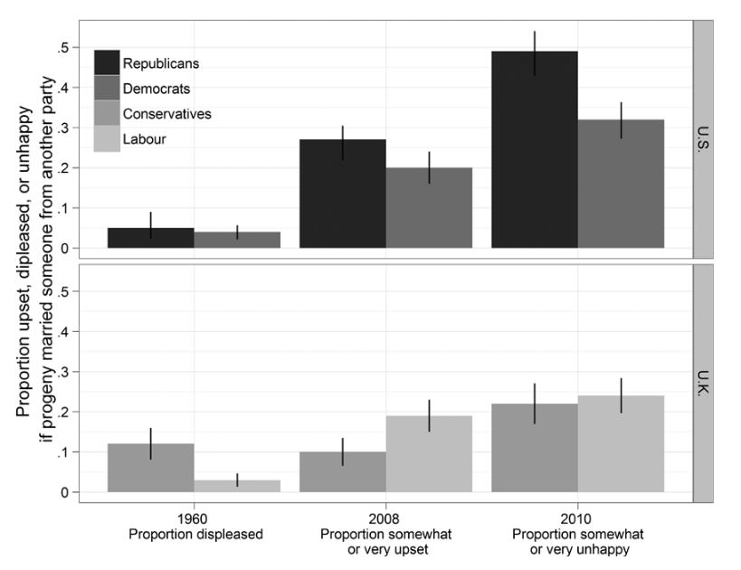…tampoco con la del demócrata!
Redes sociales: el caso del Covid-19
- Ajzenman, Calcavanti and Da Mata (2022, forth) estudian el impacto del discurso de los líderes políticos durante tiempos de crisis –focalizan caso de Bolsonaro en Brasil
- Hipótesis \(\longrightarrow\) líderes pueden tener una influencia desproporcionada en el comportamiento individual [nota: información asimétrica es un mayor problema en tiempos de crisis]
- Foco en caso de líderes que relativizaron o minimizaron la pandemia (Trump, Bolsonaro)
- Motivación \(\longrightarrow\) contexto ideal: altamente polarizado y Presidente con aprobación y reprobación similar
Redes sociales: el caso del Covid-19 (cont.)
- Usan base de datos de localización de celulares anonimizados (más de 60 millones) y construyen indice de distanciamiento social al nivel de la municipalidad-dia
- El distanciamiento social creció en Brasil antes y después del inicio de la pandemia pero el dato relevante es que no afectó homogéneamente a todas las regiones
- Estudian varios discursos de Bolsonaro pero dos en particular (15 y 24 de marzo) en que recomienda directamente no distanciarse socialmente
Redes sociales: el caso del Covid-19 (cont.)
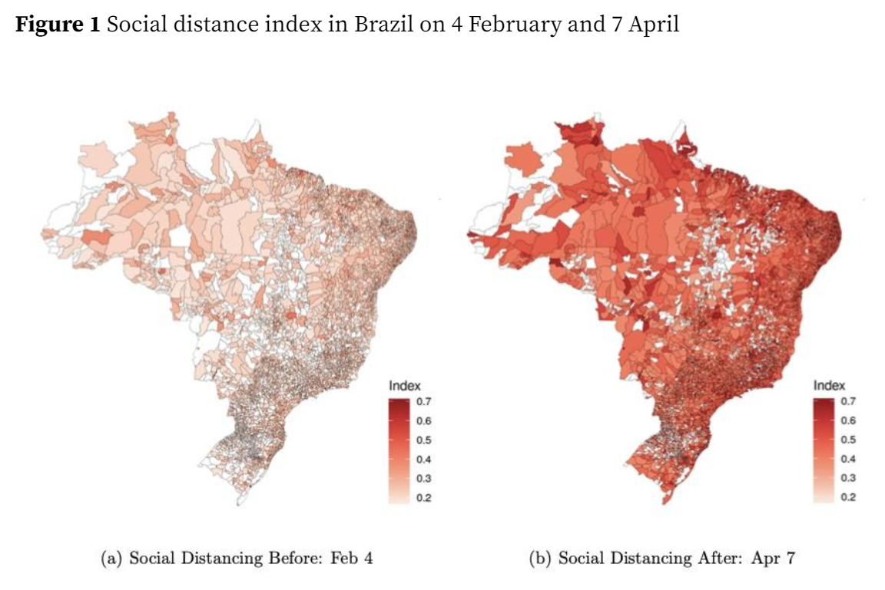Indice de distanciamiento social
Redes sociales: el caso del Covid-19 (cont.)
- El interés es estudiar si los discursos tuvieron algún impacto diferencial en los municipios pro-Bolsonaro
- Municipio pro-Bolsonaro si obtuvo más del 50% de votos en 2018
- El efecto antes de los discursos es indistinguible de cero; el efecto luego de los discursos es negativo y significativo (disminuye el distanciamiento social)
- Canal posible \(\longrightarrow\) medios locales juegan un rol importante en difusión de noticias en Brasil
- Resultados son mas fuertes aún en lugares con mayor penetración de internet
Redes sociales: el caso del Covid-19 (cont.)
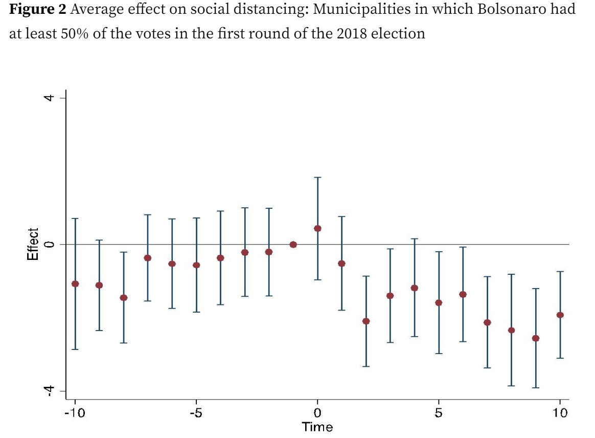Efecto de discurso sobre distanciamiento social
Redes sociales: el caso del Covid-19 (cont.)
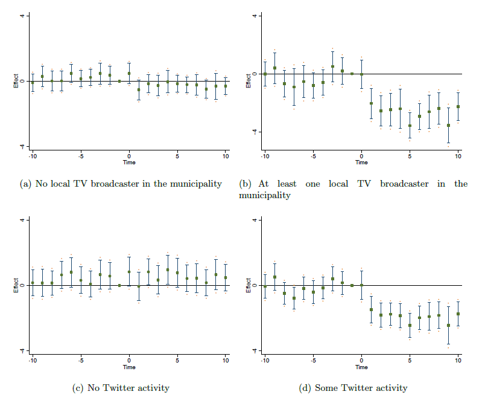Mayor efecto para lugares con mayor penetración de medios
Redes sociales y polarización
- Paper de Boxell, Gentzkow and Shapiro (2017) en uno de los estudios más importantes con datos de polarización concluyen que el mayor uso de internet no está asociado con mayor crecimiento de la polarización en EEUU
- De hecho, la polarización ha aumentado mas en aquellos grupos que son menos probable de usar redes sociales –mayores de 65 y entre 18 y 39
- Estos resultados pueden mostrar poco apoyo a la hipótesis de que Internet y redes sociales son el principal driver de la polarización
Redes sociales y polarización (cont.)
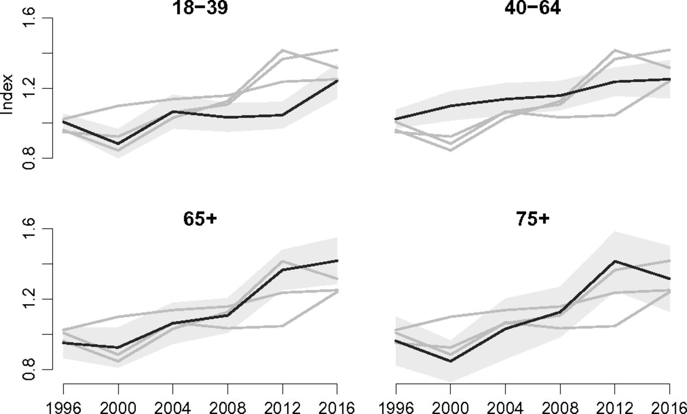Polarización en EEUU
Redes sociales y polarización (cont.)
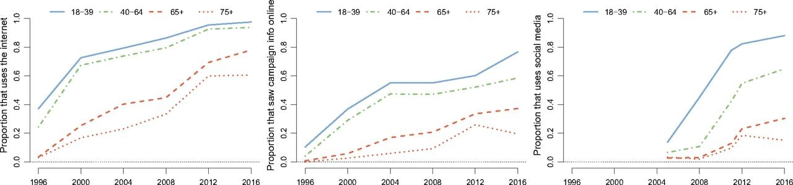Uso de medios por grupos etarios en EEUU